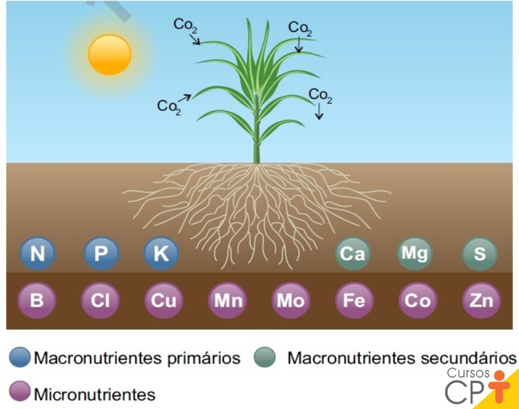
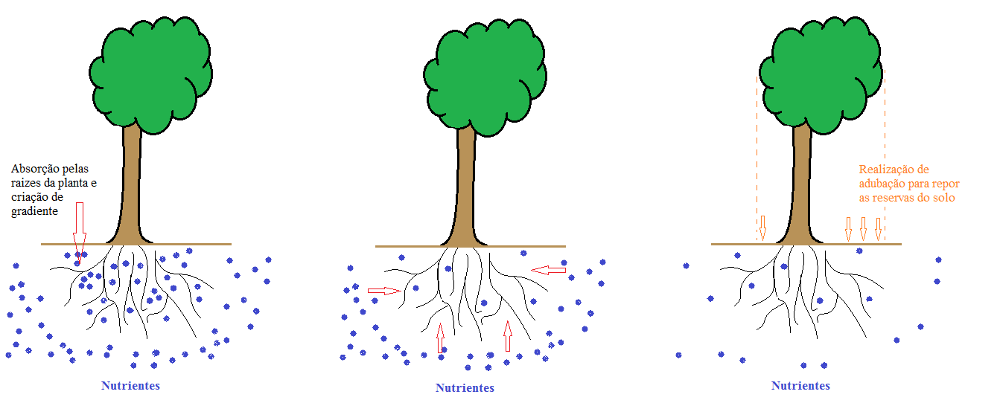
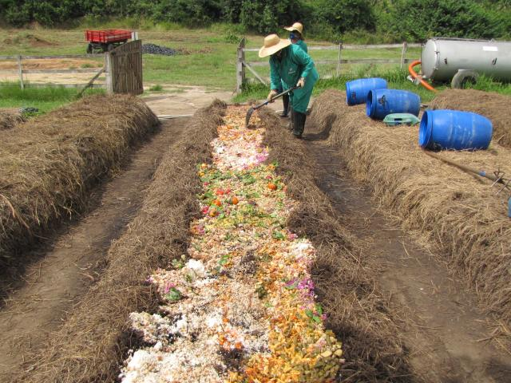
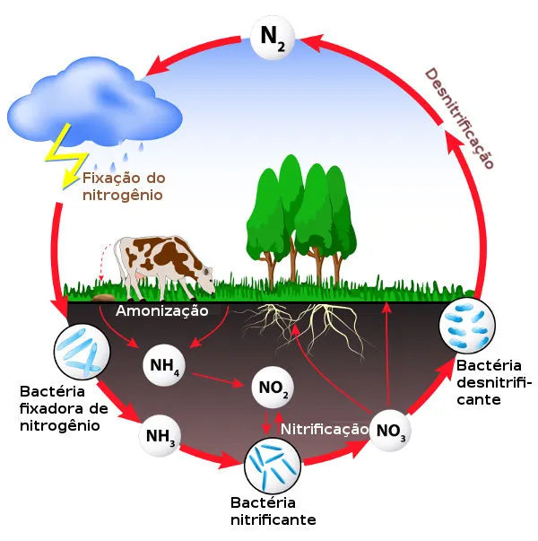

Macronutrientes
C, H, O, N, P, S, K, Ca e Mg são exigidos em maior quantidade.
pH, nutrientes e CTC em diálogo com o manejo de fertilizantes e o ciclo do nitrogênio.
O pH é um indicador de acidez ou alcalinidade e ajuda a prever a disponibilidade de nutrientes e a toxicidade de alguns elementos.
A elevação do pH via calagem tende a aumentar a disponibilidade de alguns nutrientes (como fósforo em faixa favorável), reduzir formas tóxicas de alumínio em pH mais alto e alterar a disponibilidade de micronutrientes metálicos, que geralmente diminui quando o pH aumenta.
As plantas necessitam de elementos químicos essenciais, classificados conforme a quantidade requerida. “Micro” não significa menos importante, mas sim requerido em menor quantidade.

C, H, O, N, P, S, K, Ca e Mg são exigidos em maior quantidade.
Cl, Fe, Mn, B, Zn, Cu, Ni e Mo são necessários em menor quantidade, mas são essenciais.
A CTC é a capacidade de partículas do solo (coloides) reterem e trocarem cátions com a solução do solo. Ela funciona como um “reservatório” que ajuda a evitar perdas por lixiviação e a manter nutrientes disponíveis por mais tempo.

Solos com mais argila e matéria orgânica tendem a ter maior CTC, enquanto solos arenosos tendem a ter menor capacidade de retenção de íons.
Os fertilizantes são classificados, em termos gerais, como orgânicos, inorgânicos (minerais) e organominerais. A aplicação pode ser sólida ou líquida e está ligada à reposição ou correção de nutrientes e das condições do solo.

Derivam de matéria vegetal ou animal, associados à compostagem e à formação de húmus.
Obtidos por extração mineral ou processos industriais, com composição definida e resposta mais rápida.
Categoria presente na classificação geral de fertilizantes.
O ciclo do nitrogênio garante a circulação desse elemento no ambiente e nos seres vivos, passando por etapas como fixação, amonização, nitrificação e desnitrificação.
As plantas aproveitam principalmente o nitrogênio na forma de amônio (NH₄⁺) e nitrato (NO₃⁻), conectando o manejo de adubos nitrogenados aos processos químicos e biológicos do solo.
